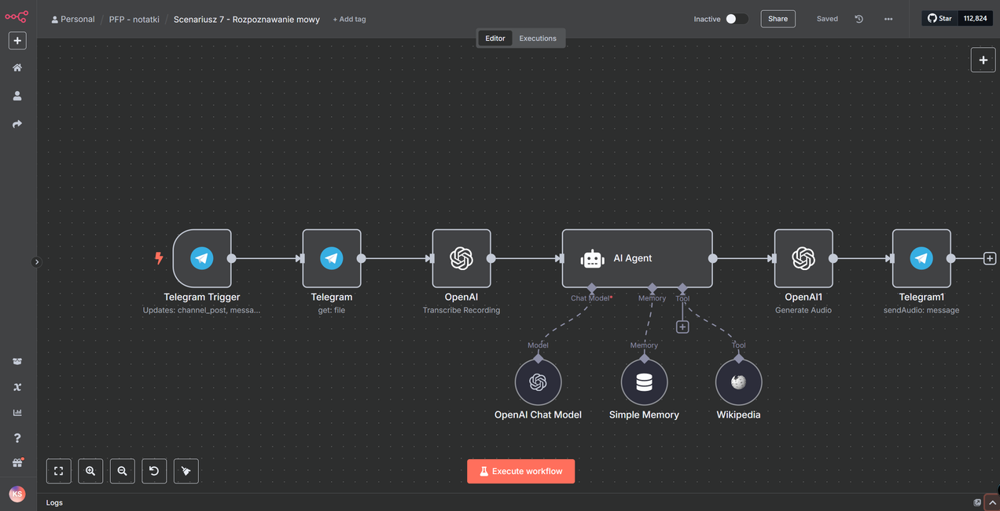

Ewolucja narzędzi automatyzacyjnych
W 2025 roku polski rynek automatyzacji procesów biznesowych przechodzi fundamentalną transformację, przesuwając się od rozproszonych rozwiązań SaaS w kierunku platform open-source z możliwością samodzielnego hostowania.
Według raportu PARP, 34% polskich MŚP wdrożyło już narzędzia workflow automation, przy czym 18% z nich wykorzystuje n8n jako główną platformę integracyjną.
W porównaniu z 2020 rokiem, gdy dominowały zamknięte systemy typu Zapier, udział rozwiązań opartych o model "fair-code" wzrósł o 220%.
Specyfika polskiego ekosystemu
Polskie firmy wykazują unikalne podejście do automatyzacji, łącząc natywne integracje z lokalnymi rozwiązaniami IT. Analiza wdrożeń z lat 2023–2025:
z własnymi serwerami
dla wrażliwych danych
polskojęzyczne API
(Płatnik, e-ZLA, B2B)
po migracji z Zapier/Make
do n8n
Cztery filary automatyzacji
Jak wygląda typowa automatyzacja?
event listener
arkusz
transformacja
raport, alert
n8n w akcji
Poniżej przykład workflow w n8n — od triggera Telegram, przez agenta, aż po zapis danych i odpowiedź użytkownikowi:

Trendy rozwojowe 2025–2030
Lata 2025–2030 to czas, w którym transformacja cyfrowa przestaje być trendem, a staje się infrastrukturą działania nowoczesnych organizacji.
O Autorze
Kacper Sieradziński to senior developer i trener z blisko 20-letnim doświadczeniem w tworzeniu zaawansowanych systemów IT oraz edukacji technologicznej. Jako założyciel Dokodu — firmy specjalizującej się w nowoczesnych szkoleniach z zakresu Pythona, automatyzacji i sztucznej inteligencji — od ponad dekady kształci przyszłych specjalistów.
Jego unikalne podejście do nauczania pomogło tysiącom osób wkroczyć w świat IT, o czym świadczą liczne case studies firm wykorzystujących n8n do optymalizacji procesów.
Architektura nowoczesnej automatyzacji
Dojrzałe wdrożenia opierają się na modularnej architekturze, gdzie każdy workflow działa jak mikroserwis — niezależny, testowalny, reużywalny.
Wyzwania technologiczne
Mimo postępów w adopcji, polski rynek boryka się z barierami. 54% organizacji napotyka trudności w pełnym wykorzystaniu możliwości n8n.
Tylko 12% firm posiada zespoły zdolne do tworzenia custom nodes w JavaScript lub Python.
| Wyzwanie | Skala problemu | Wpływ |
|---|---|---|
| Brak wiedzy inżynierskiej | 88% firm bez custom nodes | Ograniczona customizacja |
| Spadki wydajności | 68% przy 50+ workflow'ach | >400ms / operacja |
| Trudności adopcyjne | 54% organizacji | Niepełne wykorzystanie |
Podsumowanie
Nadchodząca dekada przyniesie paradygmatyczną zmianę w postrzeganiu automatyzacji. Sukces zależy nie tylko od technologii, ale od budowania kompetencji zespołów i zachowania wysokich standardów bezpieczeństwa.
Organizacje, które zdołają wdrożyć architektury łączące moc n8n z zaawansowanymi możliwościami sztucznej inteligencji, zyskają znaczącą przewagę konkurencyjną w erze automatyzacji.
Potrzebujesz automatyzacji?
Tworzymy automatyzacje szyte na miarę, dokładnie pod Twoje procesy. Koszt wdrożenia to równowartość jednej pensji pracownika — oszczędność odczuwalna już w pierwszym miesiącu.
kacper@dokodu.it • dokodu.it